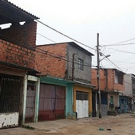

Decisão judicial pede despejo de 10 mil famílias em Guarulhos
Pedido do MP afirma que as ocupações estão localizadas em áreas de risco ou em áreas de preservação ambiental

O empoderamento da mulher também vem pelo samba
Fabiola Machado, do grupo Moça Prosa, fala da importância do resgate de composições femininas

Dilma diz que 2018 será oportunidade para país retomar a democracia
“Não há como aprovar mais medidas antipopulares, como a reforma da Previdência, elas não passam”, frisou a ex-presidenta